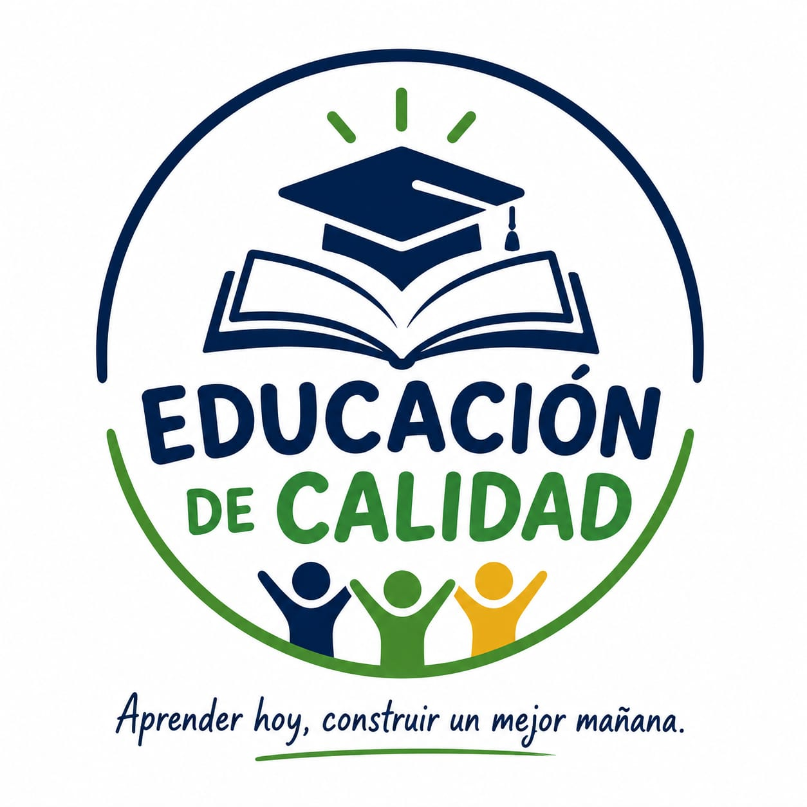
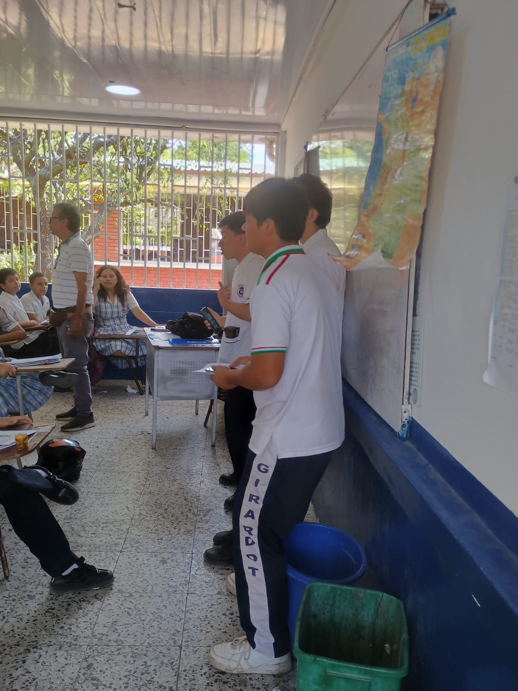

¿Por qué escogimos el ODS 4?
Elegimos el ODS 4 porque una educación de calidad necesita estudiantes comprometidos, hábitos de estudio, concentración y responsabilidad dentro y fuera del aula.
Ver información oficial del ODS 4 ↗ODS 4 · Educación de calidad
Una campaña para mejorar el rendimiento académico, fortalecer los hábitos de estudio y reducir las distracciones por el uso del celular durante las clases.
Conoce nuestra campaña
01 · Identidad y misión
Elegimos el ODS 4 porque una educación de calidad necesita estudiantes comprometidos, hábitos de estudio, concentración y responsabilidad dentro y fuera del aula.
Ver información oficial del ODS 4 ↗Promover mejores hábitos de estudio y el uso responsable del celular para fortalecer el rendimiento académico de la comunidad Normalista.
Motivar la organización de horarios de estudio y tareas.
Promover técnicas para mejorar la concentración.
Concientizar sobre el uso responsable del celular.
Apoyar la mejora del rendimiento académico.
Escuchar a los estudiantes mediante una encuesta.
Video promocional
Cuando graben el video, aquí agregaremos el enlace y su código QR.
02 · Acciones de la campaña
Realizar momentos cortos de estudio sin celular para concentrarse en una tarea importante.
Crear un horario realista para organizar tareas, estudio, descanso y tiempo libre.
Promover guardar o silenciar el celular durante explicaciones, lecturas y actividades de clase.
Compartir entre compañeros técnicas útiles para estudiar y mejorar el rendimiento académico.
Galería de evidencias
Después de realizar las actividades, agregamos aquí las fotografías como evidencia de la campaña.

03 · Datos y voces normalistas
El gráfico aparecerá cuando agreguen datos reales en script.js.
No inventen resultados. Agreguen únicamente la información de la encuesta aplicada.
Testimonios
“Aquí irá un comentario real y autorizado de un estudiante.”
“Aquí irá otro testimonio sobre estudio, rendimiento o celular.”
04 · Miembros de sistemas
Líder
Diseñador
Investigadora
Comunicador
“Aprender hoy, construir un mejor mañana.”
05 · Participa
06 · Matriz de retos ODS
| Tipo de reto | ¿Qué ocurrió? | ¿Cómo lo afrontamos? |
|---|---|---|
| Emocional | Escribir aquí una dificultad real que tuvo el equipo. | Explicar cómo se apoyaron para superarla. |
| Procedimental | Escribir aquí un problema de organización o realización. | Explicar cómo ajustaron el plan de trabajo. |
| Financiero | Escribir aquí una dificultad con materiales o recursos. | Explicar cómo aprovecharon los recursos disponibles. |
Naciones Unidas. (s. f.). Objetivo 4: Educación de calidad. https://www.un.org/sustainabledevelopment/es/education/
Agregar aquí los créditos de imágenes, videos y demás recursos.